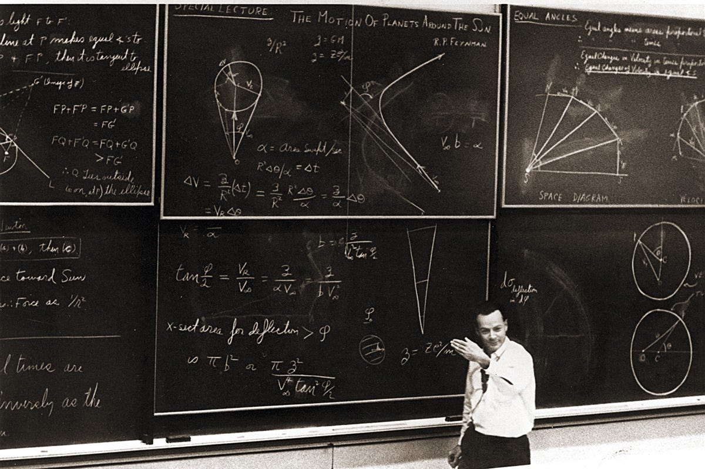
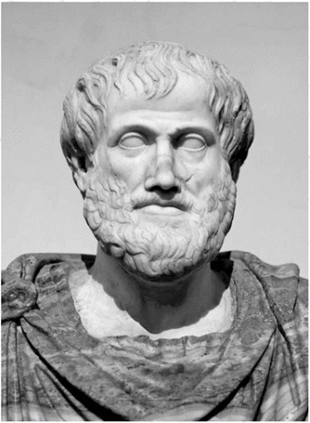
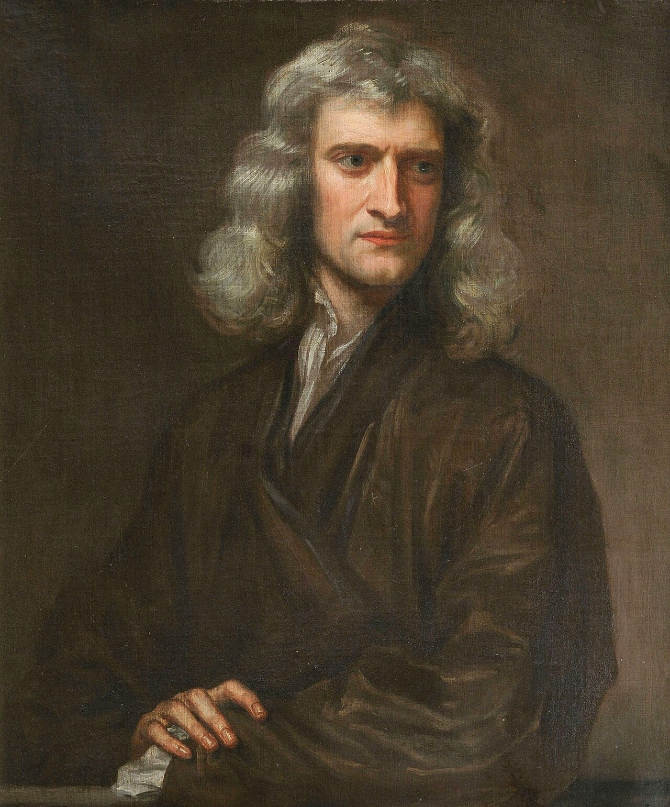
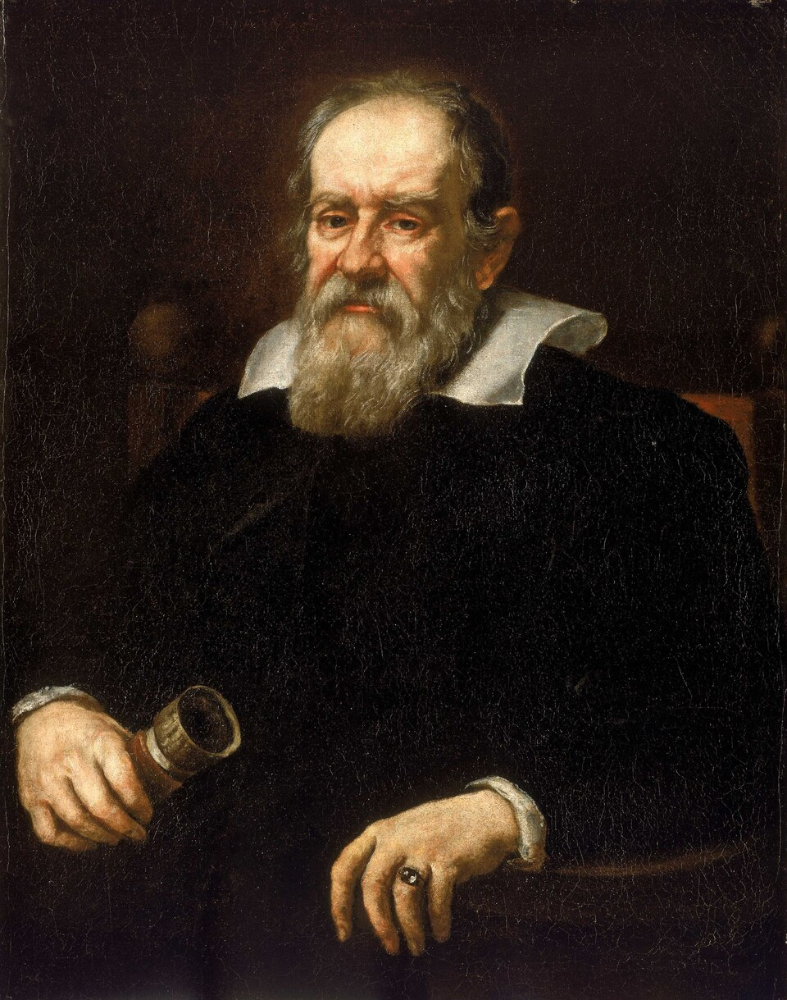

Physics as a philosophical concept appeared in the 4th century BC, and as an independent exact science it was formed in the second half of the 17th century.

The concept of physics was introduced by the ancient Greek philosopher Aristotle. Aristotle's physics is based on the doctrine of the four elements. Aristotle's works discuss the relationship between these elements, their development, how they are embodied in natural phenomena, and so on.

Science separated from philosophy through the work of Galileo Galilei, Isaac Newton, and other scientists who began to rely on experiments and mathematical calculations.
Isaac Newton
Galileo Galilei

